Zainab Abadi
Product & UX/UI designer in Madrid. I work out why complex products are hard to use, then fix them, with research, accessibility and design systems.
Privacy
This is my personal portfolio. This page explains what happens to your information if you write to me or accept analytics. Last updated: 28 October 2026.
If you send me a message
The contact form sends your name, email address and message to Formspree, which delivers it to my inbox. I use those details only to reply to you.
Formspree stores submissions for a limited time and may also process technical details such as your IP address and browser to run the service and prevent abuse. Its servers are in the United States. You can read Formspree's privacy policy for details.
You can send a message even if you decline analytics. If you prefer not to use Formspree, email me directly at zainab.abadi.s@gmail.com. If you want a copy of your message or want it deleted, write to the same address.
If you accept analytics
I use Contentsquare to understand how people use this portfolio. If you press Accept, it may collect the pages you visit, clicks and scrolling, your device type, operating system, browser and approximate location (city or country, not your address). Technical details such as your IP address may still be processed and can count as personal data.
If you decline, Contentsquare does not load, and you can still browse and contact me. You can change your choice at any time with "Cookie settings" in the footer. Your choice is saved in your browser. More in Contentsquare's Privacy Center.
Using what you see here
The work, text and images on this site show my experience and design process. Please ask before copying, sharing or reusing them.